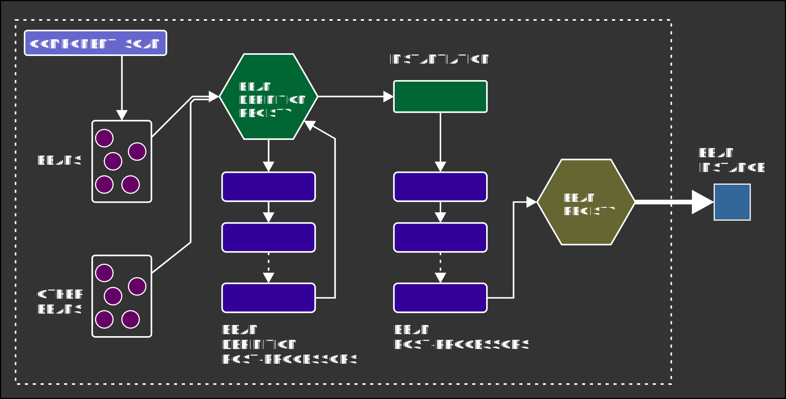

Effective Spring
A practical guide to the Spring Framework and writing effective Spring applications
Ibragim Kuliev, Tarent GmbH (2018-2019)
Theme
Simple Serif League Sky Solarized Night Black White Beige Moon Blood01
Intro
Overview
- Spring Framework introduction
- Walk through a typical Spring MVC application
- Accompanying code is available on Github
01
Intro
Spring Framework
- A framework for feature-rich, production-ready Java applications
01
Intro
Prerequisites
- Intermediate-level course
- Working knowledge of Java 8 is required
- Basic knowledge of Groovy is a plus
01
Intro
Scope
- Basics of Spring Framework
- General application design practices
- Effective use of Spring facilities
- Practical considerations, tips and tricks
- Comparison with alternative products
02
Spring Basics
02
Spring Basics
Dependency injection
- Also referred to as "Inversion of Control" (IOC)
- Or "Context Dependency Injection" (CDI) in JEE parlance
- Container manages object graphs
- An object and its dependencies are managed by the container
02
Spring Basics
Spring DI implementation
- Application context serves as central "bean registry"
- Strongly annotation-driven
@Service
public class SimpleService {
private AnotherComponent component
@Autowired
public SimpleService(final AnotherComponent component) {
this.component = component
}
}
02
Spring Basics
Spring DI - how does it work?

02
Spring Basics
DI annotations
@Configuration
class ComponentConfiguration {
@Bean("custom")
ExampleComponent component1() { ... }
@Bean
ExampleComponent component2() { ... }
}
class ExampleService {
@Autowired
@Qualifier("custom")
private ExampleComponent component
}
02
Spring Basics
Common component scopes
- Singleton - only one instance of component per app context
@Component
@Scope("singleton")
class SingletonComponent { ... }
- Prototype - new instance created by the container as needed
@Component
@Scope("prototype")
class FireAndForgetComponent { ... }
02
Spring Basics
Constructor-based DI
@Service
public class MyService {
private final Part1 part1 // can now be immutable!
private final Part2 part2 // ditto
private final Integer param
public MyService(final Part1 part1, final Part2 part2,
@Value("${app.param}") final Integer param) {
this.part1 = part1
this.part2 = part2
this.param = param
}
}
03
Spring Boot
03
Ladies and gentlemen...allow me to introduce:
03
Spring Boot
Overview
- Add-on framework "on top" of Spring
- Reduces boilerplate code
- Enhanced configuration capabilities
- Convention-over-configuration
- Many popular framework integrations
03
Spring Boot
Basic facts
- SpringBoot is not a microservice framework
- SpringBoot is not a web application framework
- Understanding of core Spring concepts is required
- The ecosystem is under active development
03
Spring Boot
HOW DOES IT WORK?
03
Spring Boot
Configuration
- Flexible YAML configuration not available in core Spring
- Flexible variable substitution
- Sensible default configuration values
- Support for process environment variables
04
General practices
04
General practices
Basics
- Use the app context effectively
- Configure components using annotations
- Use specific stereotype annotations (e.g. @Service)
- Use DI where ever appropriate / possible
- Stick to Spring's DI annotations
04
General practices
Dependency Injection Faux-pas
@Autowired
public BadHakz(Comp1 comp1, Comp2 comp2,
@Value("${params.param1}") String param1) {
this.comp1 = Objects.requireNonNull(comp1, "comp1 can't be null!")
this.comp2 = Objects.requireNonNull(comp2, "comp2 can't be null!")
this.param1 = Objects.requireNonNull(param1, "param1 can't be null!")
}
PFUI!
def "Dependency injection works as expected" () {
...
when:
def hakz = BadHakz(mock1, null, "test")
then:
thrown(NullPointerException ex)
}
04
General practices
Effective DI
Prefer singleton Spring beans over static references
public class DataSerializer {
private static final ObjectMapper OBJECT_MAPPER = new ObjectMapper()
...
public String serialize() {
return OBJECT_MAPPER
.writerWithDefaultPrettyPrinter().writeValueAsString(...)
}
}
BECOMES...
04
General practices
Effective DI
@Configuration
public class JacksonConfiguration {
@Bean
public ObjectMapper defaultMapper() {
final ObjectMapper mapper = new ObjectMapper()
mapper.enable(SerializationFeature.INDENT_OUTPUT)
return mapper
}
}
@Service
public class DataSerializer {
private ObjectMapper mapper
@Autowired
public DataSerializer(final ObjectMapper mapper) {
this.mapper = mapper
}
}
04
General practices
Application structure
- Structure your code as services
- Keep services stateless where possible
04
General practices
Object Graph Composition
- Avoid implementing unnecessary interfaces in components
- Most components can be implemented as concrete classes
- General guideline: prefer composition over inheritance
04
General practices
Troubleshooting
HELP!!!
- Spring app context provides good error messages
- SpringBoot provides even better error messages
- Don't be afraid to debug into the framework code
- Be aware of "cascading" failures during DI
04
General practices
Typical sources of trouble
- Component not picked up by component scan
- Configuration classes not picked by component scan
- DI fails to find at least one compatible bean
- DI tries to inject dependency, finds multiple candidates
@Valuecannot resolve a placeholder / incompatible data(type)
04
General practices
Tips
- App context initialization is debuggable
- Be aware of SpringAOP-enhanced classes (e.g. CGLIB proxies)
- Set up a local DEV mode for your application
05
Configuration
05
Configuration
Basics
- Learn various out-of-the-box annotations
- Use configuration classes
- Group related configuration into separate classes
- Do not repeat "global" configuration (e.g. @EnableScheduling)
05
Configuration
Basics
- Use @Bean to explicitly define additional beans
- Config classes are "usual" Spring-managed beans
- Avoid mixing configuration and component code
- Do not expose individual config values as beans
- Do not annotate your own config classes with @AutoConfiguration
05
Configuration
YAML files
- Structure configuration files
- Document configuration
- Keep a consistent naming convention for properties
- Group related properties
- Use environment variable substitution where appropriate
05
Configuration
Example
@Configuration
public class ExampleConfiguration {
@Autowired
private SimpleService service
@Value
private String appName
@Bean("anotherService")
public AnotherService anotherService() { ... }
@Bean("customService")
public YetAnotherService yetAnotherService() { ... }
}
05
Configuration
Component initialization and cleanup
- Hooks for initialization and cleanup code
- Invoked automatically by the bean factory
- Prefer this to legacy InitializingBean and DisposableBean interfaces
@Component
class BadMoonService {
@PostConstruct
public void init() { ... }
@PreDestroy
public void cleanup() { ... }
}
06
Value conversion
06
Value conversion
Conversion service
- A central ConversionService allows us to reduce boilerplate
config.fixed.ids = "1,3,45,65,89,112"
@Service
public class ComplexService {
...
@Value("${config.fixed.ids}")
private List<Integer> fixedIds
}
@RequestMapping(...)
public UserAccount getUserAccount(@PathParam("id") Long id) {...}
06
Value conversion
Custom value converters
- Define a conversion service bean
- Add custom converters to configuration
- Enjoy :-D
07
Spring MVC
08
Testing
08
Testing
Basics
- Special JUnit runner for creating an app context
- Tests become Spring beans - can use DI, configuration etc.
@RunWith(SpringRunner.class)
@ContextConfiguration(classes = TestContext.class)
class AccountServiceTest {
@Autowired
private AccountRepository accountRepository
@Value("${config.test.id}")
private Integer testId
@Test
public void testLoad() {...}
}
08
Testing
Partial application contexts
- Useful for isolating component tests
- Useful for avoiding full app initialization
- Can improve test execution performance
@Configuration
//@SpringBootApplication
class TestContext { ... }
@RunWith(SpringRunner.class)
@ContextConfiguration(classes = TestContext.class)
class CustomComponentTest { ... }
@SpringBootTest(classes = TestContext.class)
@ContextConfiguration // don't forget this!
class CustomComponentTest { ... }
08
Testing
Partial application contexts
A test can be its own application context!
@ContextConfiguration
@SpringBootTest(classes = SelfContainedTest.class)
class SelfContainedTest {
@Bean
UserDataRepository repository() {
return new UserDataRepository()
}
@Autowired
private UserDataRepository testSubject
def "Test repository operations" () { ... }
}
08
Testing
Spring Boot bean mocks
- SpringBoot provides a convenient
@MockBeanannotation - Mocks replace already declared beans in an app context
- Can still specify mock behavior if desired
- Can be used to selectively "disable" specific components
@Configuration
class TestConfiguration {
@MockBean
private RssClient rssClient //replaces the "real" RSS client
}
08
Testing
Unit tests
- Java -> Use Mockito
@Mockand@InjectMocksmechanisms - If using constructor injection, can provide mocks explicitly
class ConfusedOrk {
@Autowired private Gork gork
@Autowired private Mork mork
}
class ConfusedOrkTest {
@Mock
private Gork gork
@Mock
private Mork mork
@InjectMocks
private ConfusedOrk ork = new ConfusedOrk()
}
08
Testing
Alternatives to unit testing
- Use Spring tests with minimal app contexts instead
- Only marginally slower than "real" unit tests
- Does not significantly diminish the quality of the tests
- DI still works, so we don't have to simulate it
- Best of both worlds: mock DI dependencies before injection
08
Testing
Configuration
- Use separate configuration for tests
- SpringBoot supports a separate application.yml out-of-the-box
- Can provide additional configuration classes if desired
@ContextConfiguration
@SpringBootTest(classes = {
TestConfiguration.class,
CustomConfiguration.class,
ExtraConfiguration.class
})
class CustomConfiguredTest {
}
08
Testing
Tests as an R&D laboratory
- Use Spring-enabled tests as playground for code fragments
- Explore various Spring facilities and components
- Test application contexts for correct configuration / composition
- Explore component behavior (e.g in multi-threaded environment)
09
Application profiles
09
Application profiles
Profile-dependent context initialization
- Annotation-driven application profiles
- Names correspond to those in application.yml
- Use -Dspring.profiles.active=[profiles] to switch profiles
@Profile("prod")
@Component
public class ProdOnlyComponent { ... }
@Profile("dev")
@Component
public class DevOnlyComponent { ... }
09
Application profiles
YAML Configuration
Use the "---" YAML document delimiter to specify multiple application profiles
### Common configuration ###
spring.profiles.active: prod
request.timeout: 1000
---
### Specific production profile configuration ###
spring.profiles: prod
request.timeout: ${GLOBAL_REQUEST_TIMEOUT:100}
---
### Specific development profile configuration ###
spring.profiles: dev
request.timeout: 5000